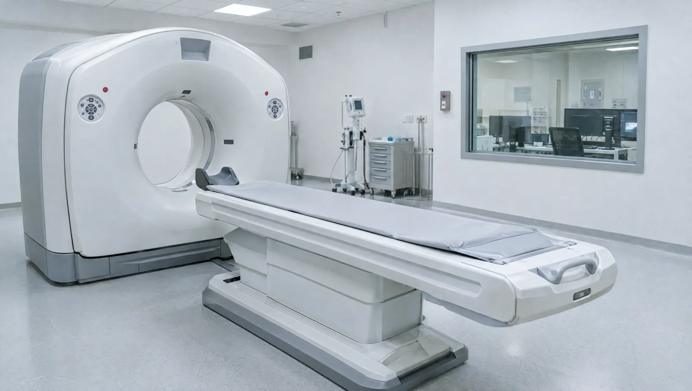

Görüntüleme biriminde hangi çekimler var?
Radyoloji biriminde tomografi, ultrason, röntgen, mamografi ve doppler incelemeleri yapılır. Hangi yöntemin seçileceği, aranan soruya göre değişir. Örneğin kemik kırığında röntgen, karın içi organlarda ultrason çoğu zaman ilk tercihtir. Görüntüleri radyoloji uzmanı inceler ve raporlar. Rapor, çekimi isteyen hekiminize ulaşır ve e-Nabız'a da aktarılır.
Röntgen, mamografi ve tomografi X ışını kullanır. Ultrason ve doppler ise ses dalgalarıyla çalışır, radyasyon içermez. Bir akciğer röntgeninin dozu çok düşüktür; birkaç günlük doğal çevre radyasyonuna yakındır. Tomografinin dozu daha yüksektir. Bu yüzden tomografi, sağlayacağı bilgi riskinden ağır bastığında istenir. Eski görüntülerinizi getirmeniz gereksiz tekrar çekimleri önler ve toplam dozu azaltır.
Hamileyseniz ya da hamilelik ihtimaliniz varsa çekimden önce mutlaka söyleyin. Ultrason ve doppler gebelikte rahatlıkla kullanılır. Karın bölgesine yönelik tomografi ve röntgen ise ertelenebilir ya da başka bir yönteme geçilebilir. İlaçlı tomografide damardan iyotlu bir boya verilir. Bu boya böbreklerden atıldığı için böbrek değerlerinize önceden bakılabilir.

Hekiminiz neden çekim ister?
- Düşme ya da darbe sonrası kemik kırığı şüphesi
- Karın ağrısında safra kesesi, böbrek ya da apandisin değerlendirilmesi
- Uzun süren öksürük ya da zatürre şüphesi
- Memede ele gelen kitle ya da düzenli meme taraması
- Bacakta şişlik ve ağrıyla gelen pıhtı şüphesi
- Tiroid, böbrek ya da karaciğerde bilinen bir bulgunun izlenmesi
- Kafa travması ya da aniden başlayan şiddetli baş ağrısı
Acil durumİlaçlı tomografiden sonraki saatlerde yaygın kaşıntı, yüzde ya da dudakta şişlik veya nefes darlığı gelişebilir. Böyle bir durumda 112'yi arayın ya da acil servise başvurun. Gecikmiş alerjik tepkiler seyrek görülür; yine de belirtiyi önemseyin.
Çekim yapılan bölgeler ve organlar
- Akciğer ve göğüs kafesi
- Karaciğer, safra kesesi ve pankreas
- Böbrekler, idrar yolları ve mesane
- Beyin ve kafa travması
- Kemik ve eklem kırıkları
- Omurga
- Sinüsler
- Tiroid ve boyun
- Meme
- Boyun ve bacak damarları
- Yumuşak doku şişlikleri
Birimdeki beş inceleme yöntemi
Tomografi
Çok sayıda X ışını kesiti bilgisayarla birleştirilir. Beyin, akciğer, karın ve kemiklerin ayrıntılı görüntüsünü verir.
- Süre
- Çekim birkaç dakika; ilaçlı çekimde hazırlıkla 30-60 dakika
- Hazırlık
- İlaçlı çekimde 4-6 saat açlık ve güncel böbrek tahlili
Ultrason
Ses dalgalarıyla karaciğer, safra kesesi, böbrek, tiroid ve yumuşak dokular incelenir. Radyasyon içermez.
- Süre
- 15-30 dakika
- Hazırlık
- Üst karın için 6-8 saat açlık; alt karın için dolu mesane
Röntgen
Kemik, akciğer ve eklemlerin hızlı ilk değerlendirmesi. Kırık ve zatürre şüphesinde sık kullanılır.
- Süre
- Birkaç dakika
- Hazırlık
- Metal takı, kemer ve tokaları çıkarın
Mamografi
Meme dokusunun düşük dozlu röntgenidir. Elle fark edilmeyen küçük değişiklikleri gösterebilir. Çekim sırasında meme kısa süre sıkıştırılır.
- Süre
- 10-20 dakika
- Hazırlık
- Koltuk altına deodorant, pudra ya da krem sürmeyin
Doppler ultrason
Damarlardaki kan akışını gösteren ultrason. Bacak toplardamarlarında pıhtı, boyun ve bacak atardamarlarında daralma araştırılır.
- Süre
- 20-40 dakika
- Hazırlık
- Çoğu bölge için hazırlık gerekmez; karın damarları için açlık istenebilir
Çekim gününden önce bilmeniz gerekenler
- Hamilelik ihtimalinizi, böbrek hastalığınızı ve önceki ilaç alerjilerinizi görevliye bildirin
- Metformin içeren bir şeker ilacı kullanıyorsanız ilaçlı tomografiden önce bunu hekiminize söyleyin
- Eski çekimlerinizin raporlarını ve görüntü CD'lerini karşılaştırma için yanınıza alın
- Metal düğmesi olmayan rahat giysiler giyin, takılarınızı evde bırakın
- Adet görüyorsanız mamografiyi adetin bitişini izleyen haftaya planlayın; meme o günlerde daha az hassastır
Radyoloji hekimleri

Çekimle ilgili kaygılarınıza yanıtlar
İlaçlı tomografi için neden böbrek tahlili isteniyor?
Damardan verilen iyotlu ilaç böbrekler yoluyla atılır. Böbrek fonksiyonu zayıf olan kişilerde bu ilaç böbreğe ek yük bindirebilir. Bu yüzden çekimden önce kandaki kreatinin değerine bakılır. Değer yüksekse hekim ilaçsız çekim, farklı bir yöntem ya da ek önlem seçebilir.
Hamileyken röntgen çektirmek bebeğe zarar verir mi?
Karın bölgesinden uzak çekimlerde, örneğin kol ya da göğüs röntgeninde, bebeğe ulaşan doz son derece düşüktür. Leğen ve karın bölgesini içeren çekimlerde ise hekim yarar ve riski birlikte tartar. Çoğu zaman ultrason gibi radyasyonsuz bir yöntem seçilir. Gebeliğinizi bilmeden bir çekim yaptırdıysanız paniğe kapılmayın; doz değerlendirmesi için hekiminizle konuşun.
Mamografide memenin sıkıştırılması neden gerekli?
Sıkıştırma dokuyu inceltir ve yayar. Böylece üst üste binen yapılar ayrışır, daha düşük dozla daha net görüntü elde edilir. Birkaç saniye süren bu basınç bazı kadınlarda rahatsızlık verebilir.
Tomografi mi ultrason mu çektireceğime kim karar verir?
Kararı şikâyetinizi değerlendiren hekim verir. Ultrason ses dalgası kullanır, radyasyon içermez ve yumuşak organları iyi gösterir. Tomografi ise X ışınıyla çalışır; kemik, akciğer ve karın içini daha geniş bir alanda ayrıntılı tarar. Radyoloji uzmanı da gerekirse yöntem değişikliği önerebilir. Bazen iki inceleme birbirini tamamlar. Örneğin ultrasonda görülen bir bulgu tomografiyle netleştirilebilir.
Bu sayfayı Uzm. Dr. Leyla Önder gözden geçirdi. Son güncelleme: 7 Ekim 2026.